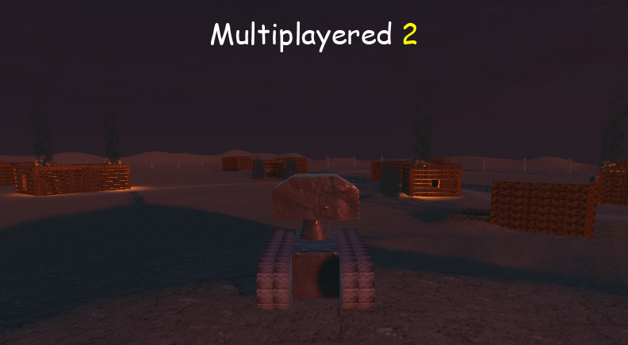
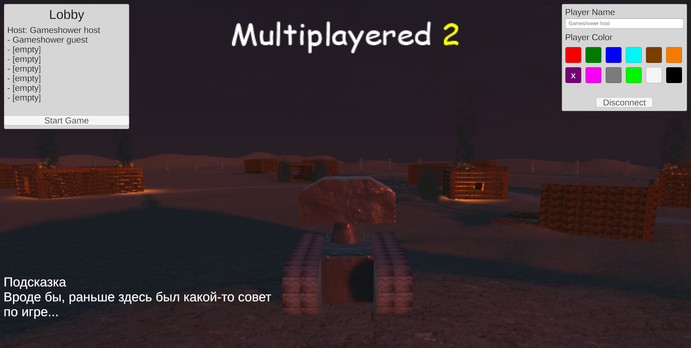
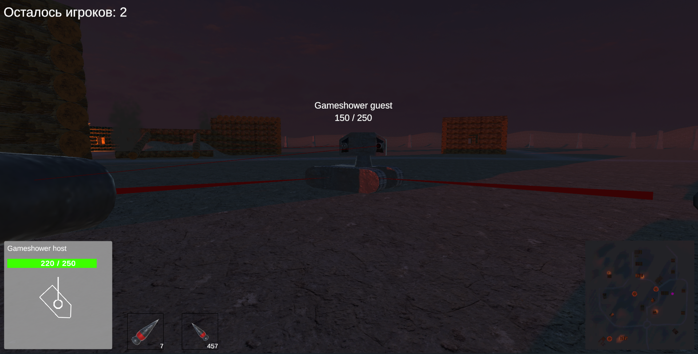
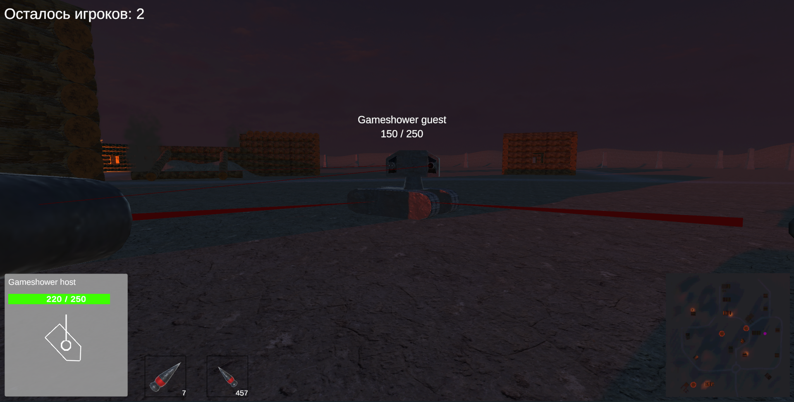

-
Multiplayered 2
Игра про испытания боевых роботов в самых экстремальных условиях.
-
Описание
Неизвестная компания решила разработать модель боевого робота - до сих пор так и не понятно, зачем он ей понадобился. Одним из испытаний, которые компания устраивает для тестирования роботов, стало сражение опытной партии из 8 машин в безымянной выжженной дотла деревне.
Вы управляете одним из 8 роботов. Ваша цель - остаться единственным уцелевшим роботом в деревне. Для этого необходимо победить остальных игроков, управляющих другими роботами.
Робот имеет 250 очков прочности, а также следующее вооружение:
- Пулемет, стреляющий мелкими пулями. Интервал между выстрелами небольшой, но из-за технического несовершенства пулемет может выпустить максимум 6 пуль за одну очередь - после этого ему требуется немного остыть. Пули наносят по 5 ед. урона;
- Пушка, стреляющая снарядами. Перезарядка - 5 секунд, наносимый урон - 75 ед.
Роботы-конкуренты - не единственное, что вас ждет в этой деревне. В этих местах часто встречаются огненные смерчи, которые сжигают все на своем пути. По неизвестной причине они притягиваются к металлическим объектам, поэтому держитесь от них подальше: подъехав слишком близко, вы рискуете стать целью для смерча.
Находясь рядом со смерчем, вы будете получать по 5 ед. урона каждые 0.25 секунды (20 ед. урона в секунду). Если вы окажетесь внутри него, то урон увеличится до 10 ед. каждые 0.25 секнуды (40 ед. урона в секунду).
-
Скриншоты
 
 -
Как запустить
- Перейдите по ссылке ниже
- Скачайте .zip архив
- Распакуйте куда-нибудь
- Запустите Multiplayered 2.exe
- Готово!
-
Ссылки
Google drive